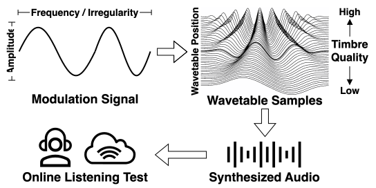
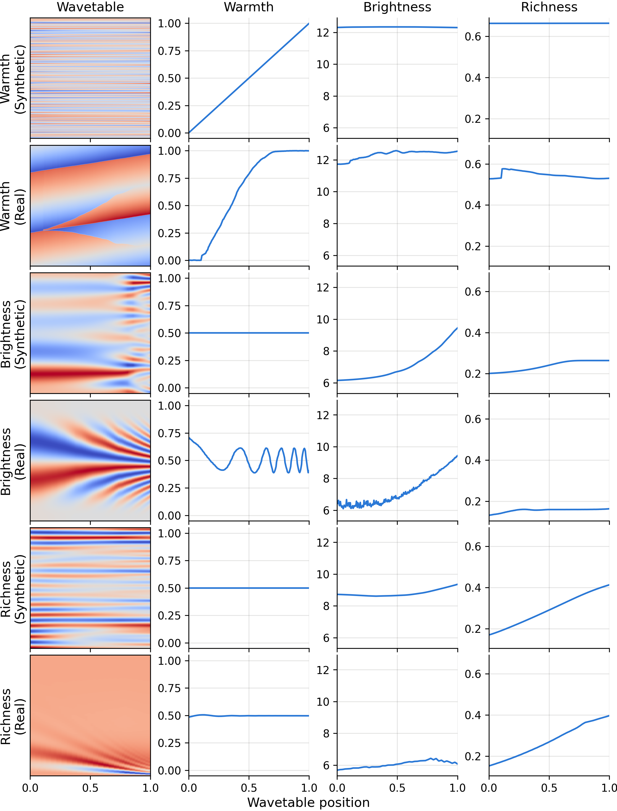
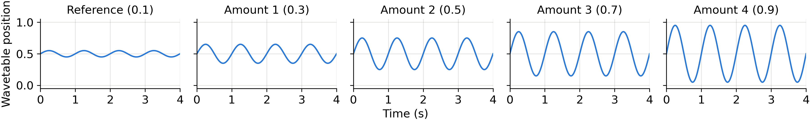
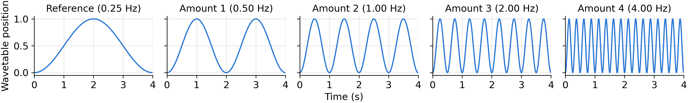
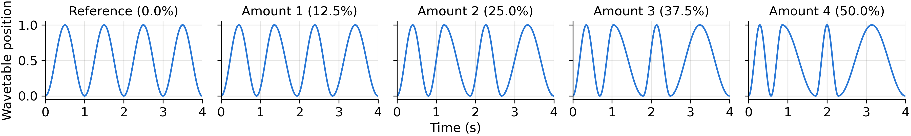

Sachin Subramanian, Iran R. Roman, Johan Pauwels, Joshua D. Reiss, Christopher Mitcheltree
Centre for Digital Music, Queen Mary University of London, UK
Modulation is central to sound synthesis, yet its perceptual salience remains poorly characterized. We investigate how amplitude, frequency, and irregularity of a modulation signal driving wavetable-position scanning affect perceived timbral change. In a MUSHRA-style listening test, participants rated perceived difference between a minimally modulated reference and four increasingly modulated versions, across a wide array of timbres. Perceived difference increases linearly with modulation amount for all three modulation types. A repeated-measures ANOVA confirms significant main effects of modulation type and amount, and their interaction, with frequency modulation producing the largest perceptual changes, followed by amplitude, and irregularity the smallest; an ordering that holds consistently at both low and high modulation amounts. Our results provide quantitative evidence for perceptually informed modulation design, and a reproducible framework for studying time-varying synthesizer timbre.

Figure 1: A modulation signal can vary in amplitude, frequency, and irregularity to scan through a wavetable that spans a range of timbre qualities. The resulting audio was rated by listeners for perceived difference from a minimally modulated reference. We hypothesized that perceived difference correlates with modulation amount across all three properties, independent of timbre.
There are 90 audio stimuli in total for our listening test (6 wavetables × 3 modulation signal types × 5 modulation amounts). Every stimulus is generated using a four-second long modulation signal that scans a wavetable across multiple positions, resulting in a time-varying change in timbre while loudness and pitch remain relatively constant. This type of modulation is common in wavetable synthesizers and is often referred to as wavetable scanning, spectral warping, or wavetable position modulation. Wavetables were chosen to vary significantly across warmth, brightness, or richness timbre qualities, while remaining relatively constant across the other two. The selected wavetables consist of 46, 166, or 256 different positions (also known as frames or cycles), each with a length of 1024 samples, giving them an approximate fundamental frequency of 43 Hz when read at a sample rate of 44.1 kHz. The modulation signal (an audio-rate control signal in the range [0, 1]) determines which frame of the wavetable is read at each time sample; positions falling between frames are linearly interpolated, so the timbre glides continuously instead of stepping. We investigate three characteristics of modulation signals: amplitude, frequency, and irregularity (also known as aperiodicity). Figure 2 shows the six wavetables and their three measured timbre qualities across each wavetable's positions and Figures 3, 4, and 5 show the three modulation signal types and their corresponding modulation amounts.
Since a wavetable's timbre rarely changes completely linearly from one end to the other (see Figure 2), the modulation signal is first passed through a per-wavetable lookup table that linearizes the timbral dimension of interest (brightness, richness, or warmth): the measured feature curve is made monotonic using isotonic regression and then inverted, so that equal changes in the modulation signal produce equal changes in the target feature. Each modulation signal is a sinusoid in the range [0, 1] with one property varied across five levels: amplitude (Figure 3), a fixed 1 Hz oscillation centred on the middle of the wavetable with a peak-to-peak excursion of 0.1 to 0.9 of its full range; frequency (Figure 4), spanning the full wavetable at 0.25, 0.5, 1, 2, and 4 Hz; and irregularity (Figure 5), a 1 Hz oscillation whose individual cycles are stretched or compressed by 0%, 12.5%, 25%, 37.5%, or 50% in a fixed random order, leaving the total duration, and therefore the average rate, unchanged. For each modulation signal type the smallest amount serves as the reference against which the other four are compared. Each rendered audio sample is finally loudness-normalized to -18 LUFS (ITU-R BS.1770), given a 256-sample linear fade in and out to avoid clicks, and written as a 44.1 kHz stereo WAV file with the mono signal duplicated across both channels. All 90 audio stimuli can be listened to below, grouped by modulation signal type: amplitude (Table 2), frequency (Table 3), and irregularity (Table 4).
Table 1: The number of positions and the minimum and maximum values of the three timbre qualities across all positions of the six wavetables used in the listening test. Each row is one wavetable, named after the timbre quality it varies and its source (synthetic or real).
| Wavetable | No. of Positions |
Warmth | Brightness | Richness | |||
|---|---|---|---|---|---|---|---|
| min | max | min | max | min | max | ||
| Warmth (Synthetic) | 256 | 0.001 | 0.999 | 12.299 | 12.345 | 0.663 | 0.664 |
| Warmth (Real) | 166 | 0.000 | 1.000 | 11.726 | 12.575 | 0.527 | 0.576 |
| Brightness (Synthetic) | 256 | 0.500 | 0.500 | 6.146 | 9.442 | 0.201 | 0.264 |
| Brightness (Real) | 256 | 0.388 | 0.709 | 6.097 | 9.424 | 0.131 | 0.163 |
| Richness (Synthetic) | 256 | 0.500 | 0.500 | 8.611 | 9.353 | 0.169 | 0.413 |
| Richness (Real) | 46 | 0.484 | 0.505 | 5.681 | 6.423 | 0.152 | 0.396 |
Table scrolls horizontally if space is limited.

Figure 2: The six wavetables used in the listening test: a synthetic and a real wavetable for each of the three timbre qualities (warmth, brightness, and richness). The first column shows the wavetable itself, with wavetable position along the horizontal axis, phase within a single position along the vertical axis, and sample amplitude on a diverging color scale symmetric about zero (blue negative, red positive). The remaining three columns show the timbre qualities measured at every position of that wavetable. Every panel shares the normalized wavetable position on its horizontal axis, and each column shares a vertical scale across all six rows so that the wavetables can be compared directly (Table 1 lists the minimum and maximum value of every curve). The curves are shown exactly as measured, before the linearizing lookup table is applied.

Figure 3: The five amplitude modulation signals, one per column, plotted as wavetable position over the four seconds of a stimulus. Each is a 1 Hz sinusoid centred on the middle of the wavetable whose peak-to-peak excursion grows from 0.1 in the minimally modulated reference to 0.9 in the largest modulation amount, so progressively more of the wavetable is scanned while the rate stays fixed. The resulting audio stimuli can be listened to in Table 2.

Figure 4: The five frequency modulation signals, one per column, plotted as wavetable position over the four seconds of a stimulus. Each is a full amplitude sinusoid that scans the entire wavetable, with its rate increasing from 0.25 Hz in the minimally modulated reference, a single sweep up and back across the four seconds, to 4 Hz in the largest modulation amount, so the wavetable is traversed more often while the range scanned stays fixed. The resulting audio stimuli can be listened to in Table 3.

Figure 5: The five irregularity modulation signals, one per column, plotted as wavetable position over the four seconds of a stimulus. Each is a full amplitude 1 Hz sinusoid whose individual cycles are stretched or compressed in a fixed random order, by 0% in the periodic reference up to 50% in the largest modulation amount; the total duration, and therefore the average rate, is unchanged, so only the evenness of the scanning varies. The resulting audio stimuli can be listened to in Table 4.
Table 2: Listening test stimuli for the amplitude modulation type. Each row is one wavetable, scanned for four seconds by a sinusoidal (1.0 Hz) modulation signal whose amplitude increases from the minimally modulated reference (0.1) to the largest modulation amount (0.9).
| Timbre Quality |
Source | Reference (0.1) |
Amount 1 (0.3) |
Amount 2 (0.5) |
Amount 3 (0.7) |
Amount 4 (0.9) |
|---|---|---|---|---|---|---|
| Warmth | Synthetic | |||||
| Warmth | Real | |||||
| Brightness | Synthetic | |||||
| Brightness | Real | |||||
| Richness | Synthetic | |||||
| Richness | Real |
Table scrolls horizontally if space is limited.
Table 3: Listening test stimuli for the frequency modulation type. Each row is one wavetable, scanned for four seconds by a full amplitude (1.0) sinusoidal modulation signal whose frequency increases from the minimally modulated reference (0.25 Hz) to the largest modulation amount (4.0 Hz).
| Timbre Quality |
Source | Reference (0.25 Hz) |
Amount 1 (0.50 Hz) |
Amount 2 (1.0 Hz) |
Amount 3 (2.0 Hz) |
Amount 4 (4.0 Hz) |
|---|---|---|---|---|---|---|
| Warmth | Synthetic | |||||
| Warmth | Real | |||||
| Brightness | Synthetic | |||||
| Brightness | Real | |||||
| Richness | Synthetic | |||||
| Richness | Real |
Table scrolls horizontally if space is limited.
Table 4: Listening test stimuli for the irregularity modulation type. Each row is one wavetable, scanned for four seconds by a full amplitude (1.0) sinusoidal modulation signal with four peaks and troughs whose irregularity increases from the minimally modulated reference (0% i.e. periodic) to the largest modulation amount (50%).
| Timbre Quality |
Source | Reference (0.0%) |
Amount 1 (12.5%) |
Amount 2 (25.0%) |
Amount 3 (37.5%) |
Amount 4 (50.0%) |
|---|---|---|---|---|---|---|
| Warmth | Synthetic | |||||
| Warmth | Real | |||||
| Brightness | Synthetic | |||||
| Brightness | Real | |||||
| Richness | Synthetic | |||||
| Richness | Real |
Table scrolls horizontally if space is limited.
The online listening test followed the MUSHRA standard and was hosted using the webMUSHRA framework and AWS. The test consisted of one training question and 18 test questions, each with reference audio, five audio stimuli, and a 0 to 100 rating scale for each stimulus. Participants were encouraged to use the full range of the rating scale for each question and self-reported their listening equipment at the time of submission. They were also required to click each audio playback button and stimulus rating slider at least once before being able to continue to the next question. During analysis, all responses of a participant were excluded if a hidden reference was rated above 25, all five stimuli received identical ratings, completion time for a question took less than 24 seconds, or they self-reported the use of phone or laptop speakers.